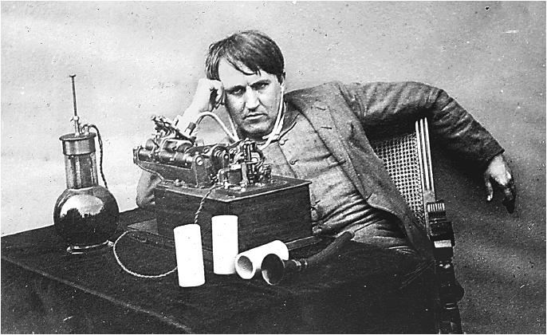
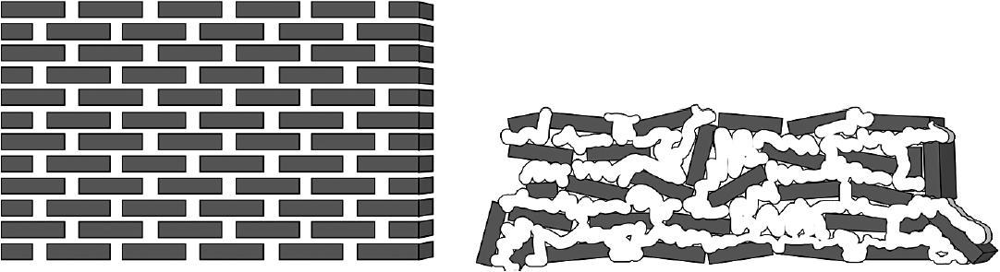
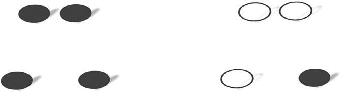
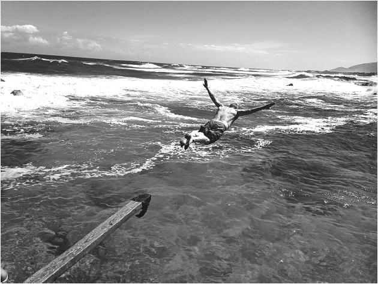

第3章 学习即创造
来自托马斯·爱迪生不粘锅的启示
托马斯·爱迪生是历史上最多产的发明家之一，名下拥有1000多项专利。没有什么能阻挡他创造的步伐。哪怕实验室在一场熊熊大火中化为灰烬，他也能精神抖擞地为新实验室起草方案，甚至比之前的更加美观气派。爱迪生的创造力为何如此出色？答案如你所见：这离不开他转换思维模式所用到的独特技巧。
专注模式和发散模式之间的转换
对于大多数人来说，只要转换一下心情，花上一点时间，就能自然地从专注模式转换到发散模式，可以去散个步、打个盹，或是去健身房，或者去做点占用大脑其他部分的事情：听听音乐、做做西班牙语动词变位练习或洗洗沙鼠的笼子。[1]关键在于去做别的事，直到你的大脑意识自然地忘掉了之前的问题。要是不采取其他转化技巧，这通常要花上几个小时。你可能会说“我哪有这个时间”。时间还是有的，只要把你的注意力转移到其他要做的事上，再加上一点放松和时间就好。
创造力研究专家霍华德·格鲁伯提到过一种3B方法：睡觉（bed）、洗澡（bath）、坐公交（bus），[2]三者任一即可。19世纪中期，一位善于发明的化学家亚历山大·威廉姆斯也发现，独自散散步对他工作进展的帮助，抵得上在实验室苦战一星期。[3]（幸亏当时还没有智能手机。）在很多领域，散步都是万能灵药。许多著名作家，如简·奥斯汀、C.桑德堡、查尔斯·狄更斯，都在经常性的长时间散步中遇见了缪斯女神。
只要你放下手中的工作，停下来喘口气，发散模式就会乘虚而入，上蹿下跳，高屋建瓴地搜寻解决方案。[4]当放松过后的你重新回到工作中时，就会收到一份迎面跳出的解决方案作为惊喜。就算问题的答案仍然犹抱琵琶，你对问题本身的理解也会更加深入。你在之前的专注模式中埋头苦干，然后某个瞬间，来自发散模式的意外解法就如同醍醐灌顶，灵光突现。
这种灵光一闪就像直觉在耳畔低语，对疑难杂症药到病除。可它又是一种最难捉摸的奇妙感觉，无论对数学和科学，以及美术、文学，还是别的创造性学科都一视同仁。没错，数学和科学是有深度的创造性思维，即使你只是刚刚在学校开始接触入门内容，也能有所体会。

杰出的发明家托马斯·爱迪生（上图），人们认为他可以熟练地运用技巧在专注模式和发散模式之间转换。著名的超现实主义画家萨尔瓦多·达利（下图），在他的艺术创作中也使用过同样的技巧。
爱迪生惊人创造力背后的秘密大概要部分归因于人们沉入睡梦中时那种似醒非醒、神游物外的感觉。据说，爱迪生在遇到棘手难题时往往会先去小睡一会儿，而非废寝忘食地努力攻克。他会拿着球坐在躺椅上，在身旁的地上放个盘子，然后逐渐放松下来，任由大脑进入自由开阔的发散思维模式。（这提醒我们，入睡是一个放松大脑的好办法，它可以帮我们在放松状态下思考要解决的问题，或进行任何需要创造力的工作。）而一旦爱迪生睡着，他手中的球就会滑落，小球落进盘子的响声将他惊醒。在这一瞬间，伟大的发明家就会抓住发散思维留下的碎片，找到新的解决方案。[5]
创造力就是对自身能力的驾驭和拓展
技术、科学和艺术之间有深层的联系，就像托马斯·爱迪生一样，疯狂的超现实主义画家萨尔瓦多·达利也会使用打盹和手中落物的方法挖掘他发散模式下的创造力。（达利称之为“似睡非睡”。[6]）发散模式能让你的学习更有深度和创造力，而解决数学和科学问题的背后往往正是创造力在运筹帷幄。许多人认为一个问题只有一个解法，但如果带着一点创意去看，其实各种解法俯拾皆是。比如著名的勾股定理，已知就有超过300种不同方法可以证明。很快我们就会看到，技术性的问题及其解法在某种程度上和诗歌别无二致。
但是别以为创造力就只是在科学或艺术上身怀绝技，它更让你驾驭和拓展这些技能。许多人认为自己没有创造力，这绝对是妄自菲薄。我们都能创造新的神经联结，并从记忆中变出本不存在的东西。两位创造力研究者利亚纳·加波拉和阿帕拉·兰詹就将之称为“创造力的魔法”。[7]而了解思维是如何工作的，将有助于你更好地看清某些想法的创造力内核。
该你试试了！
从专注到发散
阅读下面的句子，并找出其中有几处错误。
Thiss sentence contains threee errors.
前两个错误很容易通过专注模式找出来。第三个则是自相矛盾，只有换个角度，采用发散模式的方法才能发现问题。[8]（答案在注释部分。）
两种模式间的切换帮你掌握新知识
爱迪生的故事对我们的启发并没有到此结束。在数学和科学里，失败也是良师益友。[9]要知道，在寻求解答的这场冒险里，每抓住一个错误都是往前进了一步。揪出错误也能带给你成就感。据说爱迪生本人就曾宣称“我没有失败。我只是发现了10000种行不通的方法”。[10]
犯错是不可避免的。所以要想解决掉论文，那就尽早动笔。除非你真的很享受自己所做的事，否则最好还是速战速决。还记得吗？即使是休息的时候，你的发散模式仍然在后台工作。放松的时候也在学习，这简直太划算了。一些人认为自己从未进入过发散模式，他们真是大错特错了。只要放轻松什么都不想，你的大脑就会进入一种自然的默认状态，那就是发散思维的一种形式。每个人都会这样。[11]
而如果要启动发散模式与棘手问题战斗，最有效也最重要的诱发因素还是“睡觉”。可别被它懒洋洋又昏昏欲睡的表象愚弄了，发散模式绝对是你学习中的左膀右臂。你可以把它看作登山途中的大本营。登顶之路漫长艰辛，中途的大本营是必要的休息场所，你可以在那里停歇、反思、检查装备并确保路线无误。但别把暂时的休息当成最后的终点，换句话说，可别指望只靠发散模式，就能轻轻松松地如愿以偿。朝来暮去，不知不觉间你已经登上了山顶，这正是在两种模式下来回切换的分段练习发挥了显著的效果。[12]
要让大脑捕捉问题，首先要借助于专注模式调动全部注意力。研究表明，对于特定思考类型的问题，可用的精神能量，即意志力总量是有限的。[13]储备能量亮红灯时，可以跳到其他类型的专注任务上休息一下，比如放下数学题，背背法语单词。但只要仍然处于专注模式下，每一秒都在消耗你的能量储备，就像一场全神贯注、随时间增重的脑力举重一样。因此，课间和朋友们活动一下、聊聊天，能让大脑不再神经紧绷，这绝对是个提神醒脑的好办法。
你也许还想进步得更快一点，也许可以设法命令发散模式加速吸收新想法。但这和体育训练异曲同工，没完没了地练习举重反而不能达到增肌效果——肌肉再次发力之前，也需要时间来休息和恢复。长远看来，在举重练习中间歇性地休息更有益于生长出强壮的肌肉。持之以恒才是关键！
在紧凑的专注模式后，利用发散模式的方法奖励自己[14]
激活发散模式的一般方法
·去健身房
·参加运动，如踢足球或打篮球
·慢跑、散步或游泳
·跳舞
·开车兜风（或者搭个顺风车）
·绘画或者涂鸦
·淋个浴或是泡个澡
·听音乐，尤其是纯音乐
·用乐器演奏熟悉的歌曲
·冥想或者祷告
·睡觉（召唤发散模式的终极法宝！）
以下激活发散模式的方法，最适合小小地用一下，给自己个奖励。（因为比起上述活动，下面提到的这些也许反而会把你拖进更专注的状态里。）
·打电子游戏
·上网
·和朋友聊天
·主动帮助别人处理个小任务
·阅读休闲读物
·给朋友发短信
·去看电影或戏剧
·看电视节目（让你昏昏欲睡的节目可不算）
别怕落在同学后面
刚开始跋涉于数学和科学领域的学生，常常会仰望同学中的佼佼者，告诉自己一定不能被落下。但匆匆忙忙地追赶领跑者，并没给自己留出足够的时间，真正地掌握学习材料，结果就是仍然被远远地甩在后面。这让很多人惶惶不安、灰心丧气，毫无必要地半途而废。
倒不如退后一步，冷静地审视自己的长项和弱点。如果你就是需要在数学和科学的学习上多花点时间，那就面对现实慢慢来好了。假如你还在上高中，那么尽量安排好时间表，给难度比较大的学习材料留出足够的时间，并且将它们控制在你能掌握的范围内。如果你在上大学，则要避免修习的学业负荷过满，特别是你还在身兼他职的时候。对于许多人来说，单就数学和科学这两门课的一点点学习量就相当于其他科目的满负荷运转了。尤其是初入大学的新生，更不要总想着要赶上同学。
放慢脚步，也许你会得到惊喜：细嚼慢咽反而让你比那些脑子快的同学学习得更深入。帮我武装起大脑的最重要窍门之一，就是不要想一口吃成个胖子。
避开思维定式（愚公移山未必是个好办法）
记住，做作业和考试时，接受大脑中的第一个想法，会有碍于你另觅佳径。在思维定式的影响下，国际象棋选手坚信他们扫视棋盘是在寻找不同的棋路。然而，对棋手眼球移动轨迹的研究却显示，他们其实一直执着于最初的走法。不仅是眼睛，就连他们的思维也深陷其中，难以找到新的解法。[15]
根据近期的研究，眨眼是项打破僵局，帮你跳出来重新评估现状的关键行为。闭眼似乎可以在一瞬间放松我们紧绷的注意力，提供片刻休息，并让我们的意识和想法刷新页面。[16]可以说，眨眼会暂时性地断开我们与专注模式视角间的连接。但另一方面，刻意闭眼又似乎能帮我们提高专注程度——沉思求解时，人们通常远眺、闭眼或干脆蒙上眼睛来避免干扰。[17]
现在我们能逐渐理解马格努斯·卡尔森的做法了，他的那些看似无关紧要的小走神，实在是天才之举。当卡尔森起身，将目光和注意力转到其他人的棋盘上时，或许正是让思维暂时脱离了专注模式。同样关键的是，与此同时，他发散模式下的直觉仍在为这场与卡斯帕罗夫的比赛暗度陈仓。卡尔森是如何做到快速切换模式，灵光闪现的？这种能力不仅依赖于国际象棋方面的专业知识，还有他实践而来的直觉技巧。对于读者来说，这正是他山之石。或许在发展一门学科专长的过程中，你也可以建立起在两种模式之间快速切换的方法。
顺带说一句，卡尔森大概也清楚，自己从凳子上一跃而起会让卡斯帕罗夫分神。毕竟在那种水平的比赛中，再微小的扰动都会让人心神不宁——得提醒你一下，高度集中的注意力是一种重要资源，你是不会想轻易脱离开来的。（当然，除非到了主动退一步，并让发散模式发挥作用的时候。）
要解出难题或是学会新概念，至少要有一个你在无意识思考的时间段。而正是在这些你并非直接关注的时间间隔里，发散模式得以踱开到一边，用新角度看问题。在此之后，当注意力重新转回到问题上时，你就可以将发散模式传达的新想法和新模型整合起来了。

想要学得好，就得能在两个专注学习期之间空出时间，让神经模型得以巩固。这就像砌砖墙一样，你得给泥浆留出干燥的时间，正如左图所示。而右图就是试图一蹴而就的后果，妄想通过几次突击就学会所有知识，神经结构得不到时间加以巩固，只能砌出一堆歪歪扭扭的砖墙。
专注和发散思考的转换
我弹了15年钢琴，可有时还是会觉得某段旋律特别困难。要是怎么也弹不下来，我就强迫自己的手指一遍遍地练习（即使很慢或者指法也不对），之后休息一下。第二天我再次尝试，就可以如有神助地完美演奏了。
今天我得暂时放下这道微积分难题，它太刁钻，我已经要恼火了。可就在驾车去参加文艺复兴节的路上，我突然想到了做法，不得不赶快记在纸巾上免得忘掉！（要常在车里备点纸巾，说不准什么时候就会用到。）
——特雷弗·德罗兹德（Trevor Drozd）
计算机科学专业大三学生
进入下一次专注模式前，应该留出足够长的休息时间，让你的意识完全从手上的问题脱离出来。通常来说，几个小时就足够发散模式取得重要进展了。当然，时间也不能太长，否则灵感还没来得及传给专注模式就会消逝掉。这里有一条经验之谈，学新概念时，别扔上一天才回头复习。
发散模式不仅会让你以新角度看待学习内容，也会帮你把新观点整合到已知的相关信息上。同时，换视角看问题的做法也能让我们明白为何做重大决定时先“放一放”（sleep on it）往往会是个好主意。[18]当然还有，为什么休假那么重要。
开始摸索全新的概念或问题时，大脑要费上一些时间，调停专注模式和发散模式之间的紧张状态。专注模式下的工作，就像在为砌墙提供砖块，而发散模式则是用泥浆把砖块逐渐结合在一起。保持耐心，一步一个脚印地去做，非常重要。如果你有拖延的习惯，这就是为什么接下来学习一些思维诀窍对你解决问题至关重要。
该你试试了！
观察自己
下次当你对某些人或事感到挫败时，试着退后一步观察自己的行为。愤怒和失意偶尔会扮演走向成功的激将法，但它们也会关闭大脑中用于学习的关键区域。因此，不断增加的挫败感往往是个有益的暂停信号。它在暗示你，是时候转换到发散模式去了。
当你真的被难住的时候该怎么办
自制力很强的人反而会更难关闭专注模式，好让发散模式进入工作状态。毕竟，他们的成功之道就在于，在别人都放弃的情况下仍坚持不懈。如果你就是这种人，那么这儿还有另外一个技巧：重视倾听。把同伴、朋友或亲人的意见放在心上，他们会在你沮丧到临界值时有所察觉。有时，正是旁观者清。（比如，要是我的丈夫或孩子告诉我，不要再在这个漏洞百出的软件上费劲了，就算不太情愿我也还是会听的。）
说到沟通，当你真正被难住的时候，最有效的办法就是向同班同学、同龄人或者导师请教。让他们为你提供不同的视角，或是类比举例来解释概念。但在提问前，最好还是自己先把问题大卸八块。当你足够深入地把基本概念印刻在心里时，会更易于接受别人的解释。学习往往意味着为吸收的内容赋予意义，那我们总要先摄入一些内容才行（我在高中时总是一脸不屑地看着自然科学老师，觉得自己的无知全是他们的错，却忽视了自己才应该是踏出第一步的人），而且不要等到期中或者期末考试前一周才开始寻求帮助，求学要趁早，要勤快。这样当你仍然无法理解主旨时，老师就有机会换用不同的措辞，或是另觅蹊径地帮助你。
失败也是一位良师
我高二的时候，打算学习大学预修课中的计算机科学。结果大学预修考试这门却没过关，但我不接受失败，第二年我重新上课再考试。不知怎么的，搁置近一年后，再回头学习编程，我才意识到自己有多享受这个过程。我轻松通过了第二次考试。如果第一次我就因为害怕而没有上计算机科学课，而且接下来的第二次也是如此，我肯定不会像现在一样成为一位乐观有激情的计算机科学家。
——卡桑德拉·戈登（Cassandra Gordon）
计算机科学专业大二学生
该你试试了！
理解学习中的矛盾
学习的过程有时是自相矛盾的：正是我们要学的东西，让我们难以发挥学习能力；我们需要全神贯注才能解决问题，可专注也会阻碍我们找到所需的新方法；成功很重要，但辩证来看，失败也同样重要；持之以恒是关键，但南辕北辙只会带来不必要的挫折。在这本书里，你将遇到许多种学习中的悖论。你能猜到可能会有哪些吗？
工作记忆和长期记忆
讲到这里，接触一些有关记忆的基本概念会对接下来的内容有所帮助。我们将只讨论两种主要的记忆系统：工作记忆和长期记忆。[19]
在大脑中对正在处理的信息进行瞬时以及有意识加工的这部分记忆，叫作工作记忆。人们过去以为，我们的工作记忆能容纳大约七个记忆单元，或者叫“组块”，但现在的广泛共识是，工作记忆只能容纳四个组块。（人类大脑倾向于自动地将记忆单元打包成组块，因此我们的工作记忆的实际容量要比看起来大很多。[20]）你可以把工作记忆视为在大脑中抛接球的杂耍演员。四个记忆单元就是抛到空中的四个球（或者也可以说是抛到工作记忆中），因为你的大脑在不断地对它们施加能量。能量必不可少，有了能量，你的新陈代谢（那绝对是一个永不知足的吸血鬼），也就是身体的自然消耗过程，才不会吞噬掉这些记忆。换句话说，你需要让这些记忆保持活跃；否则，身体就会把能量输送到别处，然后你就会忘记自己之前获取的信息。通常情况下，工作记忆能支撑大概四个单元，就像左边图中那样。

不过，如果你掌握了一门数学或科学的技术，或是一项概念，它在工作记忆中所占据的空间就会变小。释放出的大脑空间则可以让你更轻松地处理其他想法，这就是右图所示的内容了。要学习数学和科学知识，工作记忆非常重要。它就像大脑中的一块黑板，你在上面可以写写画画，记录那些尚在考虑或者还在试图理解的想法。
那么该如何把工作记忆中的信息留住呢？一般来说，这需要不断地排演重复，比如，你找不到机会把一串电话号码写下来，那就一直念叨着好了。而在全神贯注时，你则可能会闭上眼睛，不让其他事情侵入工作记忆中的有限空间。
相反，长期记忆可以看作仓库。东西一旦存进去，它们通常就一直待在那儿了。这间仓库幽深广阔，可以容纳数十亿件物品，而且包裹很容易因为埋得太深，而难寻踪迹。研究表明，当你的大脑首次把一个信息条目存入长期记忆时，最好时常去看看，以保证日后需要时还能找到它。[21]［技术控往往会把短期记忆类比于随机存取存储器（RAM），那长期记忆就是硬盘空间。］长期记忆在学习数学和科学方面也很重要，解题时需要的基本概念和技巧都存储在那里。
把信息从工作记忆转存到长期记忆需要花点时间。不过有个叫作间隔重复的技巧，有助于推进这个过程。你或许猜到了，它需要你不断去重复要记忆的内容，比如一个生词或者一种解题技巧，连着重复几天，这就是一个阶段。两个阶段之间休息一天，多来几次，延长整个练习过程，效果就会截然不同。
已有研究证明，要是想把某件事牢牢钉进记忆里，一晚上重复20次倒不如每天重复几次，多坚持几天甚至是几周效果来得更好[22]。这和前面砌墙的例子是同样的道理，如果不给泥浆留出干燥的时间（让连接部分成型加固），怎么可能形成良好的结构呢？
该你试试了！
运行你的思维后台
下次在解决棘手的问题时，先尽力做上几分钟。一旦做不下去，就转去另一项任务。发散模式会继续在后台处理之前的问题。等你折返回去的时候，取得的进展会让你目瞪口呆。
睡眠建议
许多人会说进入小睡状态很难。很多年前的某节瑜伽课教会了我的一件事，就是减缓呼吸。别去想什么我一定得睡着，只是缓慢地呼气吸气就好。可以想想我就要睡着啦，同时把注意力集中在呼吸上。这时也要保证房间光线暗下来，或者戴个飞机专用睡眠眼罩，再用手机设定一个21分钟的闹铃。小睡时间太长会让人头昏脑涨，这点时间就足够让我精神焕发。
——埃米·阿尔康（Amy Alkon）
专栏作家兼打盹女王
睡眠对学习的重要性
你可能会觉得这个说法耸人听闻，但人醒着的时候大脑确实会产生有毒物质。而在睡眠中，脑细胞会收缩，于是细胞间隙会变大，这就像是打开了水龙头——脑脊液从中流过并且冲洗掉毒素。[23]这样的夜间大扫除正是保持脑健康的一个环节。你极度缺觉时总会觉得脑袋不太灵光吧？没错，这些残留毒素就是罪魁祸首。（无论是阿尔茨海默症还是抑郁症，都与缺乏睡眠有关——长期缺乏睡眠是致命的。）有研究表明，睡眠是记忆和学习的重要环节。[24]睡眠状态下的部分清理工作就是清除琐碎的记忆，并增强重要的部分。
睡觉时，你的大脑也会回顾需要掌握的知识难点，一遍又一遍地加深加固这些神经模型。[25]最后还有一个好处，那就是充足的睡眠能够显著提升人们解决难题、理解知识的能力。
沉睡就像是让前额叶皮层那个清醒的“你”彻底关机，因此大脑其他区域之间更容易互相聊天，并得以拼凑出问题的答案。[26]（当然，前提是专注模式下知识的种子扎了根，发散模式才能开花结果。）看来，要是打盹或晚上睡前看些知识点，会增加你梦见它们的概率。如果你这样还不满意，念念不忘地想要梦到学习内容，那知识入梦的可能性就更大了。[27]这样的梦境能切实增进理解能力，巩固记忆，让知识组块触手可得。[28]所以，如果学习中的你感到疲倦，最好的办法就是直接去睡觉。第二天起个大早，再用以逸待劳的大脑完成阅读。
经验丰富的学习者会说，让精力充沛的大脑阅读一个小时，强过疲劳的大脑读上三个小时。缺觉的大脑根本无法保证在正常思考活动中一如既往地进行思维联结。所以，考前通宵意味着即使你准备得再完美，思维也不会正常运转。这样成绩怎么会理想呢？
各学科都可触类旁通的方法
专注模式和发散模式在所有领域和学科都有参考价值，不仅限于数学和科学。正如英语专业大四学生保罗·莫里斯所说：“如果卡在一道难题上，我会干脆躺到床上去，摊开笔记本，旁边放一支笔。在快要入睡前或醒来时，写下自己对这个问题的一些想法。尽管有些想法其实没太大意义，但它们能让我从全新的视角看待这个问题。”
本章小结
·遇到数学或科学上的概念和难题，首先要让专注模式打头阵。它完成第一轮战斗后，就轮到发散模式了。
·放松一下，做点别的！一旦工作期间出现了挫败感，转移注意力就该随之出现，让隐藏在后台的发散模式运转起来。
·学好数学和科学最好的办法就是“每天进步一点点”。
·让两种模式有足够的时间各行其是，你才能理解自己所学的知识。牢固的神经结构就是这样建立起来的。如果你有拖延问题，试着计时25分钟来一心一意地投入工作，别让发短信、上网或其他分心的事物上门打扰。
·主要的记忆系统有两类：
·工作记忆——只能一次扔四个球的杂耍演员；
·长期记忆——能储存大量知识的仓库，不过要靠定期回访保持对其中内容的新鲜感。
·间隔性重复有助于把信息从工作记忆转移到长期记忆。
·同时，睡眠也是学习过程中的一个重要部分。它会帮助你：
·构造一般性思维活动所需的神经联结——这也是为什么考前一晚的睡眠很重要；
·攻克难题，真正理解所学的知识；
·巩固复习重点知识，修剪旁枝末节。
驻足与回顾
站起来放松一下——喝杯水，吃点零食，或者想象自己是一个绕着桌子运动的电子。一边走动一边回想这一章的主要内容。
学习提升
1.列举几项有助于从专注模式切换到发散模式的活动。
2.有时，你会确信自己已经发现了解决问题的新方法，但事实上并没有。那么如何才能更主动地意识到自己的思考过程，拥抱其他可能性呢？是否有必要永远让自己以开放的态度对待新可能？
3.为什么凭借自制力让自己停下来很重要？跳出学习、学术的范畴，你还能想到哪些让“停下”显得很重要的情形呢？
4.学习新概念时，你要在一天之内就再次复习，以免刚接触的新概念随风而逝。但结果往往是有太多事情挤在那里，要过了几天甚至是更久之后才会开始再次复习。你能否制订出一种行动计划，来保证自己及时复习新知识？
关于创造力的建议：神经心理学家罗伯特·彼尔德

夏威夷玛卡普吾岛，罗伯特·彼尔德想做就做
精神医学教授罗伯特·彼尔德，是加利福尼亚大学洛杉矶分校创意生物学坦南鲍姆研究中心（Tennenbaum center）的主任，他领导的“Mind Well”项目旨在提高大学里学生和教职工的创造性成就及心理上的幸福感。
创意生物学研究表明，个人成功依赖于以下几个要素。首先，正如耐克的口号所说：放胆去做！
·创造力是数量上的竞争。最能显示我们一生中创意作品量的，就是我们的作品数量。我有时候会觉得，下定决心把自己的作品公之于众是一件非常痛苦的事，但这么做往往都会有最好的收效。
·战胜恐惧。在Facebook总部演讲后，我收到了一张鼓舞人心的海报，上面写着：“如果你那时克服了恐惧，事情会是怎样的？”我每天都会看一遍这句话，希望自己能够无所畏惧。你在害怕什么？不要让恐惧阻止你前进！
·再多做几次总会成功。如果你不喜欢这个结果，那就再来一次！
·批评使我们更优秀。把作品展示给他人，利于客观地审视自己，获得独特的视角和领悟，进而为作品的下一个版本做出新的改进计划。
·接受分歧。创新性和“认同度”通常是成负相关的，那些最不受认同的观点很可能会是最有创意的一个。现在回想起来，有好几次发现“新大陆”，都是因为我质疑了既有答案。所以我相信，每当我们把一个问题追根溯源到达本质，然后去质疑自己的设想（以及别人提出的设想），创造力就会更上一层楼，以此循环往复！
[1] “脑距离模型”（cerebral distance model）由Marcel Kinsbourne and Merrill Hiscock（1983）提出，其假设，脑中两项并行的任务所在的脑区越近，彼此间的相互干扰就越大。两项并行任务使用同一大脑半球时，尤其是同一脑区的情况下，确实会让事情变得一片混乱（Bouma 1990，p.122）。或许发散模式更善于同时处理多项任务，这归因于发散过程不专注的本性。
[2] Rocke 2010，p.316，citing Gruber 1981.
[3] Ibid.，pp.3-4.
[4] Kaufman et al.2010，特别是在222～224页上的“免除抑制假说”；Takeuchi et al.2012.
[5] 在试图追溯这个传说出处的过程中，我联络了Leonard DeGraaf，他是托马斯·爱迪生国家历史公园的档案保管员。他说：“我听过爱迪生和落球的故事，但我从没看到任何可以证实此事的文档记录。我也不能确认这故事的起源。这也许是有一定事实基础的轶事之一，这成了爱迪生神话的一部分。”
[6] Dalí1948，p.36.
[7] Gabora and Ranjan 2013，p.19.
[8] Christopher Lee Niebauer and Garvey 2004。Niebauer提到目标物和元级思考的差别。句中第三个似是而非的错误，顺便说一句，就是没有第三个错误。
[9] Kapur and Bielczyc 2012，含有对“解题失败的重要性”的精彩论述。
[10] 关于爱迪生实际表达及文字的各种讨论，请见http://quoteinvestigator.com/2012/07/31/edison-lot-results.
[11] Andrews-Hanna 2012；Raichle and Snyder 2007.
[12] Doug Rohrer and Harold Pashler（2010，p.406）说道：“……对学习中暂时性动力的近期分析显示，比起传统的教学设定，将学习时间分散在一段更长的时间内，能让学习更加持久。”它与专注和休息状态网络的练习，将是未来研究的重要课题。请参阅Immordino-Yang et al.2012。换句话说，我在这里描述的内容，是对学习中会发生的事情做出的合理推测，但是需要在深入研究中得到进一步的证实。
[13] Baumeister and Tierney 2011.
[14] 我想说明的是，这些只是我对于什么能够促进发散模式下思考的“最佳猜想”。我的猜想基于观察人们会从何处获得最有创造力的“灵光一闪”的领悟。
[15] Bilali et al.2008.
[16] Nakano et al.2012.
[17] Kounios and Beeman 2009，p.212.
[18] Dijksterhuis et al.2006.
[19] 短期记忆是未经主动排演过的激活信息。工作记忆是短期记忆信息的子集。短期记忆信息即注意力集中和主动处理之所在（Baddeley et al.2009）。
[20] Cowan 2001.
[21] 如果你对其中的神经分布感兴趣，这就像长期记忆和工作记忆在共同使用前额叶和顶叶的重叠区域。但内侧颞叶只用于长期记忆，并不用于工作记忆。请参阅Guida et al.2012，pp.225-226，and Dudai 2004.
[22] Baddeley et al.2009，pp.71-73；Carpenter et al.2012。间隔性重复同时也被认为是分布式练习。Dunlosky et al.2013，sec.9，对分布式练习提出精彩的综述。遗憾的是，如Rohrer and Pashler 2007中所说，许多教育者，特别是数学领域的，相信过度学习法是增强长期记忆的好方法，因此他们布置许多相似题目，最终变成了被迫劳动，无法给长期记忆带来一点好处。
[23] Xie et al.2013.
[24] Stickgold and Ellenbogen 2008.
[25] Ji and Wilson 2006；Oudiette et al.2011.
[26] Ellenbogen et al.2007。发散模式或许也和潜在抑郁症存在关系——潜在抑郁症是指，极容易分散注意力，且轻易被干扰（Carson et al.2003）。对于喜欢话说一半就换了思路的人，他们有希望开发一下创造力。
[27] Erlacher and Schredl 2010.
[28] Wamsley et al.2010.